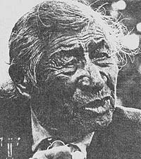

This article originally appeared in Akwesasne Notes, a native American periodical published by The Mohawk Nation, via Roosevel town. New York 13683. Send the good people at Akwesasne Notes $10 00 for a one-year subscription. You wont be disappointed.
Except for some of Ron Cobb's cartoons, a scant handful of recipes, and two or three other very short bits of information, we've never reprinted any editorial material in a current MOTHER that has already appeared in a former issue of this magazine. Certainly never a full page or longer article.
But we're going to make an exception just this once. Because recently while going back through an old MOTHER NO. 5-we were struck, once again, by the warm and gentle and profound wisdom of Walking Buffalo . . . one of the native people of this continent.
So . . . for all of MOTHER's current readers who've never seen the fifth issue of this publication . . . and for all of MOTHER's "old time" readers who've forgotten Walking Buffalo's words from seven years ago . . . here's a special treat by Da Na Waq (White Beaver)
March 20, 1871-a great day in Morley, Alberta. It was on that day that little Tatanga Mani (Walking Buffalo) was born. In the years that followed, he was adopted by white missionary John McDougall, educated in white men's schools, returned to the reserve at Morley to advise and guide his people, and finally-in his old age-was asked to act as an emissary of peace on behalf of the Canadian Government.
Join our Stoney brothers and hear his words:
Nobody tries to make the coyotes act like beavers, or the eagles behave like robins. Christians see themselves as set apart from the rest of the animal and plant world by superiority, even as a special creation. Perhaps the principles of brotherhood which the world urgently needs come more easily to the Indian.
Do you know that trees talk? Well, they do. They talk to each other, and they'll talk to you, if you will listen. Trouble is, white people don't listen. They never listened to the Indians, and so I don't suppose they'll listen to the other voices in nature. But I have learned a lot from trees . . . sometimes about the weather, sometimes about animals, sometimes about the Great Spirit.
We were lawless people but we were on pretty good terms with the Great Spirit, creator and ruler of all. You whites assumed we were savages. You didn't understand our prayers. You didn't try to understand. When we sang our praises to the sun or moon or wind, you said we were worshipping idols. Without understanding, you condemned us as lost souls just because our form of worship was different from yours.
We saw the Great Spirit's work in almost everything: sun, moon, trees, wind, and mountains. Some times we approached him through these things. Was that so bad? I think we have a true belief in the Supreme Being, a stronger faith than that of most of the whites who have called us pagans. The red savages have always lived closer to nature than have the white savages. Nature is the book of that great power which one man calls God and which we call the Great Spirit. But, what difference does a name, make?
We had none of your denominations to split us, to introduce hatreds in the name of religion. We had no man-made guides to "right living"; nature was our guide. Nature is still my Bible, and I've just returned after many days of studying it.
I'll tell you what I think. We were on better terms with the Great Spirit before the white man came than we were after he confused us by attempting to frighten us into joining his churches. As devil worshippers, they said we were heading right down the road to hell. Frighten us? Who wouldn't be frightened if they were told they'd burn in a lake of fire forever if they didn't accept certain teachings.
The white man meant well. Many of the missionaries were my friends, but they underestimated the Indian faith when they used fear to make us change. There is no such thing as hell to our native religion, and we can never imagine the Great Spirit choosing to inflict everlasting torture on man as a punishment.
As I understand nature's ruler, he would not restrict the truth to a few favoured humans, allowing the others to remain in eternal darkness. If the Great Spirit is prepared to reveal secrets of importance to people, he will give all humans in all lands an equal chance of getting that enlightenment.
My people have been searching for the truth for generations, and they continue to find it. All races of people have conducted such searches. Perhaps that explains why nearly all the world's religions have points in common, like charity, forgiveness, and belief in life after death.
Crowfoot of the Blackfeet tribe was a thinker, as everyone agrees, but he never gave up his native religion. They coaxed him, but he held on to his own beliefs. The old chief didn't ridicule your religion and its teachers, but his own faith brought him enough satisfaction and comfort. The same could be said about Piapot. For years he was under pressure to change. He didn't try to convert white men to his religion, but he hated bigotry and he had no time for people who contended that the white man's religion was inspired by the Creator while the Indian's was not. Who do they suppose inspired the Indian's religion?
At 87 years of age in London, England, Walking Buffalo said:
It's not right raising children so far from nature. I suppose your boys and girls have never seen pussy willows, robins building nests, or grass covered hills. This pavement is fine for cars, but it is hard medicine for children.
Hills are always more beautiful than stone buildings, you know. Living in a city is an artificial existence. Lots of people hardly ever feel real soil under their feet, see plants grow except in flowerpots, or get far enough beyond the street lights to catch the enchantment of a night sky studded with stars. When people live far from scenes of the Great Spirit's making, it's easy for them to forget his laws.
In Germany:
I remember the war years. We were led to hate the Germans. Now I think they are good people. 1'd pitch my tent here any time. I'll never hate anybody again. Hating hurts me more than it hurts the other fellow.
To all Indians, he said:
You see, we lost our land and our freedom, but we don't have to lose all our Indian ways and habits. As good Indians, we can make a substantial contribution to Canadian culture. It may not have occurred to many white men that red, black, and yellow peoples might have some good ideas about satisfying the world's needs. I'll never try to justify the foolish fighting and scalping my people did, but in some ways, we had better ways of living. At least we kept our fighting to small wars, whereas the so-called civilized whites go in for big conflicts.
There's a lot of madness in the white man's world. We think whites would be better off to slow down and live closer to the soil and forests and growing things, instead of galloping around like stampeding buffaloes in cutback country. If they would take some of our advice, they might find a contentment which they have not discovered in their mad rush for money and for the pleasures which they think it will buy.
To all white men, he said:
It's strange, but in trying to find solutions to Indian problems, the authorities speak to nearly everybody but Indians. Many of us could offer sound advice on this question. But remember, we're proud of our race, and we want to continue to be Indians.
I was born with a bronze skin and I like it. Some of my friends were born white or black or yellow. They were not consulted. But that's all right. There are yellow roses, white roses, and red roses and the fragrance of one is about as nice as another.
I hope my children will live in a world where people of all colors can sit and work together without having to conform completely to the majority's will . . . You must accept us as Indians who want to be Indians and who are proud to be Indians.
Death claimed our wise brother December 26, 1967, and the entire world mourned. Any fool can be quarrelsome and belligerent. Being half good and half bad takes neither effort nor skill. But being a man of peace requires bravery.
|
 |
|
|